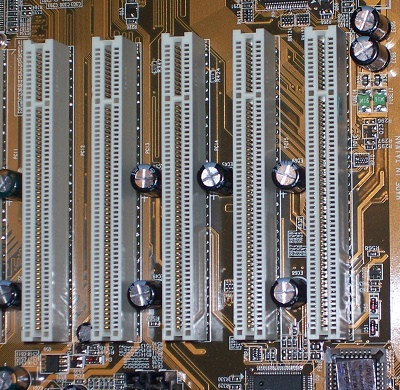

ѕовернутис€ на головну

PCI (англ. Peripheral component interconnect, досл≥вно: взаЇмозв'€зок перифер≥йних компонент≥в) Ч шина вводу/виводу дл€ п≥дключенн€ перифер≥йних пристроњв до материнськоњ плати комп'ютера.
—тандарт на шину PCI визначаЇ:
- ф≥зичн≥ параметри (наприклад, роз'Їми ≥ розведенн€ сигнальних л≥н≥й);
- електричн≥ параметри (наприклад, напруги);
- лог≥чну модель (наприклад, типи цикл≥в шини, адресац≥ю на шин≥);
–озвитком стандарту PCI займаЇтьс€ орган≥зац≥€ PCI Special Interest Group.
—пециф≥кац≥€ шини PCI
- частота шини Ч 33,33 ћ√ц або 66,66 ћ√ц, передача синхронна;
- разр€дн≥сть шини Ч 32 або 64 б≥т, шина мультиплексована (адреси ≥ дан≥ передаютьс€ по сп≥льн≥й шин≥);
- п≥кова пропускна здатн≥сть дл€ 32-розр€дного вар≥анту, що працюЇ на частот≥ 33,33 ћ√ц Ч 133 ћб за секунду;
- адресний прост≥р пам'€т≥ Ч 32 б≥т (4 байти);
- адресний прост≥р порт≥в вводу-виводу Ч 32 б≥т (4 байти);
- конф≥гурац≥йний адресний прост≥р (дл€ одн≥Їњ функц≥њ) 256 байт≥в;
- напруга 3,3 або 5 вольт.
—тандартн≥ модификац≥њ PCI
- PCI 2.0 Ч перша верс≥€ базового стандарту, що одержала широке поширенн€, використовувалис€ €к карти, так ≥ слоти ≥з сигнальною напругою т≥льки 5V. ѕ≥кова пропускна здатн≥сть Ч 133 ћб/с;
- PCI 2.1-3.0 Ч в≥др≥зн€лис€ в≥д 2.0 можлив≥стю одночасноњ роботи дек≥лькох пристроњв bus-master (так званий конкурентний режим), а також по€вою ун≥версальних карт розширенн€, здатних працювати €к на 5V, так ≥ на 3.3V слотах (з частотою 33 ≥ 66 ћ√ц в≥дпов≥дно). ѕ≥кова пропускна здатн≥сть дл€ 33 ћ√ц Ч 133 ћЅ/с, а дл€ 66 ћ√ц Ч 266 ћЅ/с;
- PCI 64 Ч розширенн€ базового стандарту PCI, що з'€вилос€ у верс≥њ 2.1, подвоюЇ число л≥н≥й даних ≥, отже, пропускну здатн≥сть. —лот PCI64 Ї подовженою верс≥Їю звичайного PCI-слота. ‘ормально сум≥сн≥сть 32-б≥тних карт ≥з 64-б≥тними слотами (за умови на€вност≥ загальноњ п≥дтримуваноњ сигнальноњ напруги) повна, а сум≥сн≥сть 64-б≥тноњ карти з 32-б≥тним слотами Ї обмеженою (втрата продуктивност≥ Ї в обох випадках). ѕрацюЇ на тактов≥й частот≥ 33 ћ√ц. ѕ≥кова пропускна здатн≥сть Ч 266 ћЅ/с
- PCI 66 Ч це PCI 64, що працюЇ на тактов≥й частот≥ 66 ћ√ц , використовуЇ 3.3V-слоти, карти мають ун≥версальний, або 3.3V форм-фактор. ѕ≥кова пропускна здатн≥сть Ч 533 ћЅ/с;
- PCI 64/66 Ч комб≥нац≥€ PCI 64 и PCI 66, дозвол€Ї вчетверо зб≥льшити швидк≥сть передач≥ даних у пор≥вн€нн≥ з базовим стандартом PCI, ≥ використовуЇ 64-б≥тн≥ 3.3V слоти, сум≥сн≥ т≥льки з ун≥версальними та 3.3V 32-б≥тними картами розширенн€. арти стандарту PCI64/66 мають ун≥версальний (€кий маЇ обмежену сум≥сн≥сть ≥з 32-б≥тними слотами) або 3.3V форм-фактор (останн≥й вар≥ант принципово не сум≥сний ≥з 32-б≥тними 33 ћ√ц слотами попул€рних стандарт≥в). ѕ≥кова пропускна здатн≥сть Ч 533 ћЅ/с;
- PCI-X Ч розширенн€ PCI64, дл€ вс≥х вар≥ант≥в шини ≥снують наступн≥ обмеженн€ за к≥льк≥стю пристроњв, що п≥дключають до кожноњ шини: 66 ћ√ц Ч 4, 100 ћ√ц Ч 2, 133 ћ√ц Ч 1 (або 2 €кщо один або обидва пристроњ не перебувають на платах розширенн€, а вже ≥нтегрован≥ на одну плату разом з контролером), 266 ћ√ц, 533 ћ√ц ≥ вище Ч 1;
- Mini PCI Ч новий форм-фактор PCI 2.2 дл€ використанн€ переважно у ноутбуках;
- Cardbus Ч PCMCIA форм-фактор дл€ 32-б≥тних, 33 ћ√ц PCI;
- CompactPCI Ч використовуЇ модул≥ розм≥ру Eurocard, що вход€ть в PCI backplane;
- PC/104-Plus Ч ≥ндустр≥альна шина, що використовуЇ сигнал≥зац≥ю PCI з ≥ншим роз'Їмом;
- PMC Ч PCI mezzanine card, мезон≥нна шина, в≥дпов≥даЇ стандарту IEEE P1386.1;
- ATCA або AdvancedTCA Ч шина наступного покол≥нн€ дл€ телекомун≥кац≥йноњ ≥ндустр≥њ.